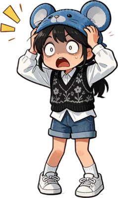

还有
四程路
高铁、接驳车、摆渡车，最后一段靠腿。
每一步选错，都可能回不了家。

玩法 每程 3 道情景题，9 秒内选对。选错或超时掉一格体力，掉光就重走这一程。
目标 一路换乘到村口，别被绕路、占座、上错车和村口黑车坑住。
高铁、接驳车、摆渡车，最后一段靠腿。
每一步选错，都可能回不了家。

玩法 每程 3 道情景题，9 秒内选对。选错或超时掉一格体力，掉光就重走这一程。
目标 一路换乘到村口，别被绕路、占座、上错车和村口黑车坑住。